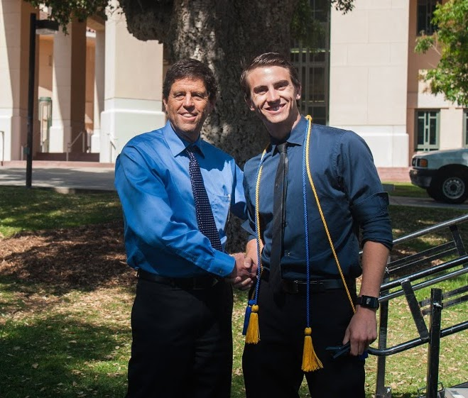
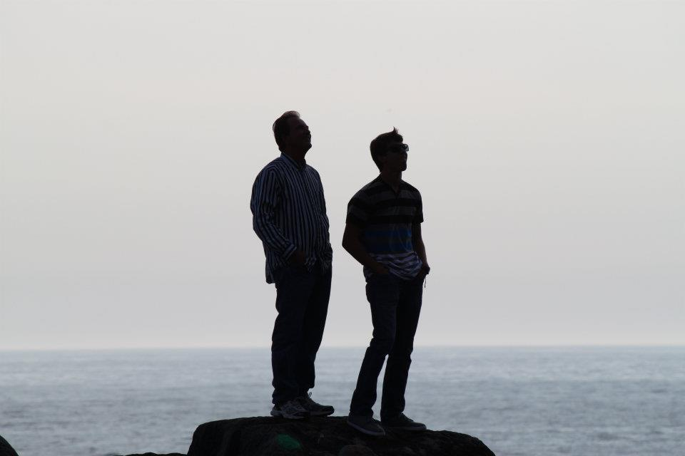

Hi! My name is Tim Sweeney. Thanks for stopping by – feel free to browse around and check out my latest projects. Currently, I am a Junior Business Administration student at California Polytechnic State University. Academically, I concentrate in Information Systems and minor in Computer Science. Personally, I have a passion for software/web development and focus my energy in an entrepreneurial setting. In my free-time, although admittedly limited, I enjoy challenging myself with new software projects, collaborating with other young entrepreneurs, and making a solid effort to try every eatery or restaurant in sunny San Luis Obispo!
I live with the mindset of an entrepreneur – someone who does not just flow with life, but lives with intention and vision. I strive to be someone who chooses to take the path less traveled; someone who leads a life of learning, helping others, and providing real value to the world.
Technically, as a Business student, I understand business processes, market valuations, and economic projects. However, to compliment this, I enjoy computers and information systems. The later, I.S., can be confusing. Put simply, I design how a computer stores, views, and manipulates data. Computer Science is a great compliment, as it formalizes much of the technical requirements and allows me to apply my I.S. training to almost any software scenario. I love data, and I love building things.
Formally, as an Information Systems student with a Computer Science minor, I have earned "A"s in classes focused on database design, discrete structures, various languages (C, C#, Java, PL/SQL, and JavaScript), as well as Microsoft Access application design. Through my education, I have taken a passion for abstract data structures, database theory, and the use of data to drive analytic decisions.
I have been involved with many projects and am capable of working with many languages. I enjoy C, Java, JavaScript, HTML/CSS, SQL, PHP, Objective-C, Ruby/Rails, and am excited to learn anything else that life might throw at me! Currently, my biggest interest is in full-stack development and database architecture. I am developing web apps using a full Javascript stack, web-sockets, micro-frameworks, and noSQL databases.
Beyond working as a software developer and backend engineer, I have built iPhone applications used by the entire Cal Poly Freshman class, designed backends for young startup companies, created PHP driven software solutions for online retailers, and API's using the RoR framework. I am always excited to work with new technologies and challenge myself in new ways. If your interested in knowing more about what I do, please feel free to contact me.
My entrepreneurial path began with the reading of Rich Dad, Poor Dad by Robert Kiyosaki, a book about economic freedom. I have 3 goals in life: to positively impact the world, to grow a happy and healthy family, and to live freely. I believe that through building and fostering assets such as lean businesses, real estate, software products, and financial investments, these goals can be achieved.
Through software, I hope to build and maintain a suite of applications used by many people to enhance their lives. I tend to be driven by the challenge of figuring out how to piece together the different technologies required to deliver the desired end result. Building software is truly my passion and I envision myself using this love, driven by business intelligence, to accomplish my long-term goals and add sustainable value to our society.